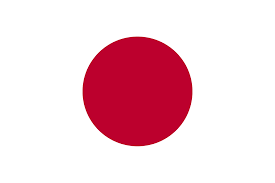
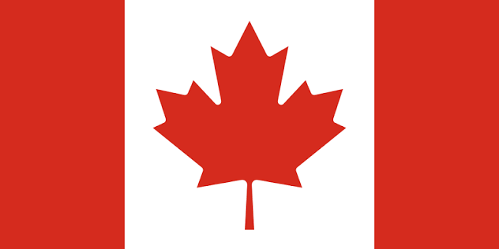

Франция — страна в Западной Европе со столицей в Париже. Она известна архитектурой, музеями и кухней. Среди её символов — Эйфелева башня, Лувр и лавандовые поля Прованса.




Япония
Япония — островная страна в Восточной Азии. Её столица — Токио. Здесь современные города соседствуют с древними храмами. Весной цветёт сакура, а гора Фудзи остаётся одним из самых узнаваемых символов страны.
Подробнее »Канада
Канада расположена в Северной Америке. Её столица — Оттава. Страна известна озёрами, хвойными лесами и Скалистыми горами. Кленовый лист на флаге стал её узнаваемым символом. Берега Канады омывают три океана.
Подробнее »Франция и Исландия

Исландия — островная страна в северной части Атлантики. Её столица — Рейкьявик. Вулканы, ледники, водопады и горячие источники создают необычные природные пейзажи.
Подробнее »Мир начинается с любопытства
У каждой страны есть свои традиции, язык и история. Знакомство с ними помогает увидеть, насколько разнообразна наша планета. Выбери страну, узнай о её столице и природе, а затем составь собственный маршрут путешествия.
Подробнее »Италия
Италия находится на юге Европы. Её столица — Рим, где сохранились памятники античности. Венеция привлекает каналами, Флоренция — искусством, а побережье Средиземного моря — живописными городами и пляжами.
Подробнее »Бразилия
Бразилия — крупнейшая страна Южной Америки. Её столица — Бразилиа, а официальный язык — португальский. Страна известна лесами Амазонии, карнавалами и футболом. На востоке её берега омывает Атлантический океан.
Подробнее »